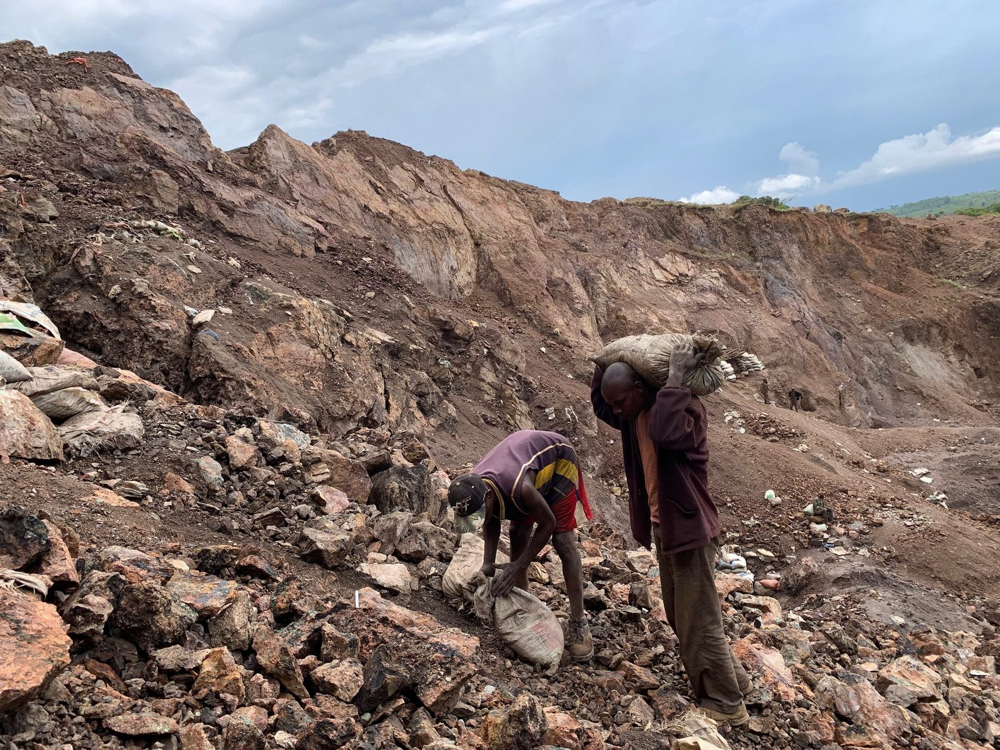
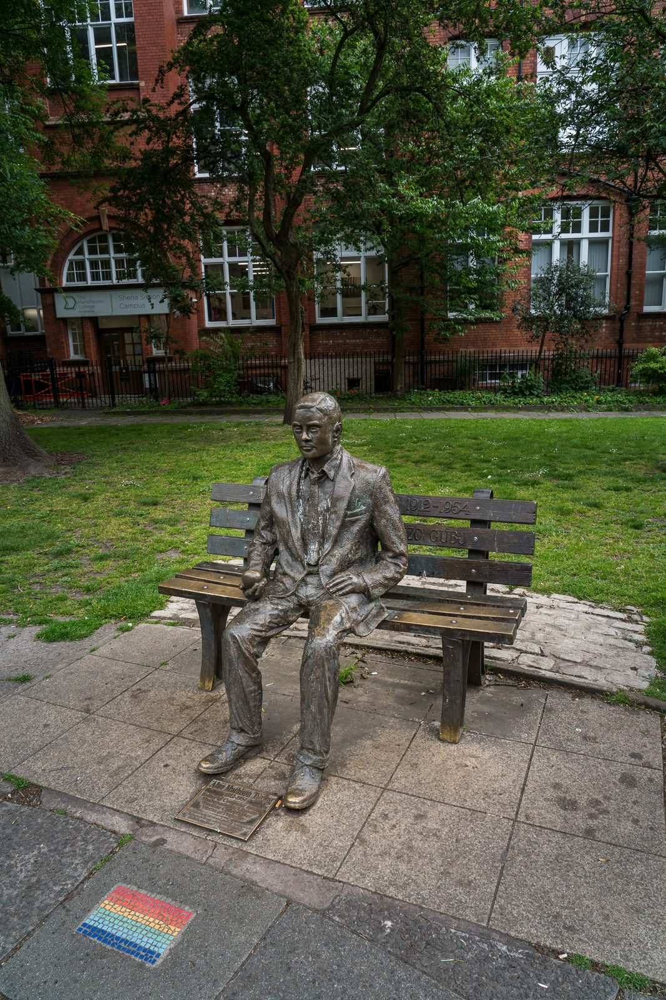

Unit 1 · Lesson 11
The price, and who is left out
Every phone starts in a mine and ends in a drawer or a dump. The man who started the story paid a price too.
The story
A phone contains dozens of metals. Cobalt and lithium are in the battery. Most of the world's cobalt, about three quarters, comes from the Democratic Republic of the Congo. Lithium comes mostly from Australia, China and Chile; in Chile's Atacama Desert it is taken from salty water, which uses water in one of the driest places on Earth. Coltan is a rock that gives tantalum, used in tiny electronic parts.


In 2016 the human rights organisation Amnesty International reported that children were working in hand-dug cobalt mines. Things can change: companies can check where their metals come from, governments can make laws, and buyers can keep their phones longer.
At the other end of a phone's life there is e-waste: electronics that are thrown away. In 2022 the world produced about 62 million tonnes of it, and only about 22%, less than a quarter, was properly collected and recycled (Global E-waste Monitor 2024). The cloud is somebody else's computers, in big buildings called data centres. In 2024 data centres used about 1.5% of all the world's electricity (IEA), and this is expected to roughly double by 2030, partly because of AI. Many also need water to keep cool.

Alan Turing paid a price too. In 1952 he was convicted because he had a relationship with a man. He had to accept hormone treatment to avoid prison, and he lost his permission to do secret work. He died in June 1954. His death was ruled a suicide; some historians question this.
Britain changed. In 2009 the government apologised. In 2013 the Queen gave Turing a royal pardon. In 2017 the "Turing law" pardoned tens of thousands of other men convicted under the same old laws. Since 2021 Turing's face is on the £50 note. If this topic upsets you, talk to someone you trust or to the school counsellor.


The science
One photo, the whole story (1)
Your friend takes a photo. The sensor turns light into numbers: pixels, three numbers each, stored as bits (Shannon, 1937: switches can work with 0 and 1). The CPU runs the camera program: fetch, decode, execute (Turing's idea in 1936, Faggin's CPU on one chip in 1971). While it works, the photo sits in RAM, the workbench (Hamilton's Apollo memory, 1969). Then it is saved in storage, the pantry (the RAMAC hard disk, 1956).
- The cook = CPU core
- The metronome = clock (GHz)
- The countertop = cache
- The workbench = RAM
- The pantry = storage (SSD / HDD)
One photo, the whole story (2)
The operating system gives the orders (Torvalds' Linux, 1991, is inside every Android phone). The photo becomes a file with a name and a path (Engelbart's 1968 demo showed how to point at and organise information). A radio sends the bits through the air (the smartphone, 2007). On your friend's phone, the screen turns the numbers back into light: billions of tiny switches, Boole's logic, today.
- The cook = CPU core
- The metronome = clock (GHz)
- The countertop = cache
- The workbench = RAM
- The pantry = storage (SSD / HDD)
Repair, pass on, recycle
The greenest phone is the one you already have. A new battery often gives an old phone years of life. If you change phone, give the old one to someone who needs it, or take it to a collection point for electronics, so the metals can be recovered. Never put it in the normal rubbish.
Check now
Quick questions. You see the answer at once.
Most of the world's electronic waste is properly recycled.
True or false?
Put the photo's journey in order.
- CPU: runs the camera program
- radio: sends the bits
- RAM: the workbench
- screen: numbers become light
- sensor: light becomes numbers
- storage: saved as a file
Why was Turing prosecuted in 1952?
- he was a spy
- he had a relationship with a man, which was a crime in Britain then
- he gave away war secrets
Try it
Twelve inventions from the whole unit. Put them in order, oldest at the top, then press Check.
Paper version
Put in order, then check: 1804 Jacquard's punched-card loom · 1843 Ada Lovelace's Note G · 1854 Boole's logic · 1936 Turing's paper on computable numbers · 1937 Shannon's switches · 1940 the Bombe · 1945 ENIAC · 1947 the transistor · 1956 the RAMAC hard disk · 1971 the Intel 4004 · 1984 the Macintosh · 2007 the iPhone.
Your turn
Exercises
From ★☆☆ (easy) to ★★★ (hard). Use a hint if you are stuck.
-
Exercise 1 ★☆☆
Match each material to where it is used or comes from.
- cobalt — ?
- lithium — ?
- coltan — ?
-
Exercise 2 ★☆☆
In 2022, about how many million tonnes of e-waste did the world produce?
-
Exercise 3 ★★☆
About what share of the world's electricity did data centres use in 2024?
- about 0.01%
- about 1.5%
- about 50%
-
Exercise 4 ★☆☆
Turing was the only man punished by that law.
True or false?
-
Exercise 5 ★★☆
Put these events in time order, oldest first.
- the "Turing law" pardons other men (2017)
- the government apologises (2009)
- the royal pardon (2013)
- Turing is convicted (1952)
- Turing on the £50 note (2021)
-
Exercise 6 ★★☆
Match each step of the photo's journey to a person or invention from the unit.
- the CPU on one chip — ?
- storage on a disk — ?
- the operating system — ?
- memory that kept going on the Moon — ?
-
Exercise 7 ★★★
Jury card: "Your phone's battery lasts half a day. Repair it for €60 or buy a new phone?" Write your position in two or three sentences, with one fact.
-
Exercise 8 ★★★
Your friend takes a photo. Explain what happens until it appears on your screen. Name one person from the unit behind one step.
In one sentence
Every photo travels through the whole history of computing, and every phone has a price.
Words of the chapter
- e-waste
- electronics that are thrown away RAEE (rifiuti elettronici)
- cobalt
- a metal in batteries, mostly mined in the DR Congo cobalto
- lithium
- a light metal in batteries litio
- coltan
- a rock that gives tantalum, used in tiny electronic parts coltan
- data centre
- a building full of computers: the cloud data center
- conviction
- a court's decision that someone is guilty condanna
- pardon
- an official decision to forgive a conviction grazia
- recycle
- take a thing apart so its materials can be used again riciclare